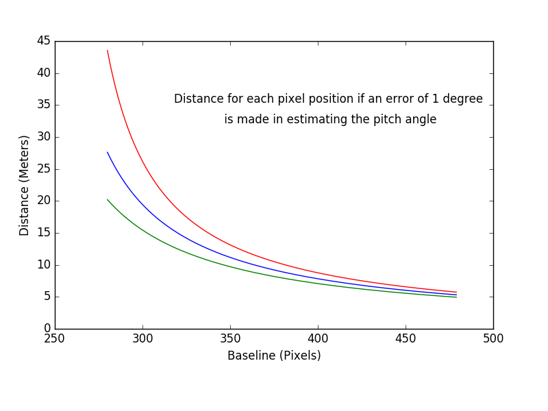

Monocular distance comutation using Projection Matrix is highly suseptible to errors. Error in estimating the mounting angle of the camera by even a single degree can lead to catastrophic results. As shown in the graph below the error in distance increases with increase in distance of the obstacle.
In this post we discuss the methodology to compute the mounting error of the camera by computing the pitch and yaw of the camera with respect to the vehicle .
To accurately compute the mounting error of the camera we make use of Focus of Expansion (FOE). The vehicle is made to drive in a straight line and the FOE is comuted over several frames. Once the exact position of FOE is determined it is then used to compute the mounting angle of the camera w.r.t the vehicle.
FOE is a very important concept in a scenario wherein translation motion is dominant. It is a given point in the image where all the displacement vectors of stationary objects in the environment converge. However, it can be very difficult to compute its exact location, especially in noisy condition of a vehicle driving in a dynamic environment because of the inherent rotational motion of the vehicle, presence of dynamic objects and inaccurate optical flow which in turn leads to inaccurate displacement vectors. The first step is to remove dynamic obstacles in the environment for which we use a neural network trained to detect vehicles and persons in the environment as they are the prominent dynamic obstacles in the environment. Thereafter custom features are tracked over frames using optical flow. The inaccurate tracks are further filtered using RANSAC.
For computing the FOE from these translational vectors we iterate over potential FOE locations. For a particular FOE we compute the optimal rotational mapping which when applied to the image I results in image I' minimizing the deviation of displacement vectors from FOE, represented by the equation :-
$$\sum_i^n \frac{(x_{i} - x_{f}) \times (x_{i^{'}} - x_{f})}{\mid x_{i} - x_{f} \mid}$$
Steepest descent can be used to get optimal radial components. The pixel location minimizing the Error Function is selected to be the FOE.
Once we have the location of the FOE the next step would be to compute the mounting angle of the camera. Making use of the fact that the FOE is located at infinity, the value of pitch and yaw angles can be reduced to
$$yaw = \tan^{ - 1}{(foe_x-c_x) \over focallength}.$$
$$pitch = \tan^{ - 1}{\cos(pitch)*(foe_y-c_y) \over focallength}.$$
Now that we have the pitch and yaw angles, the rotation matrix can be computed. Then making use of inverse projection matrix, the distance can be accurately computed.